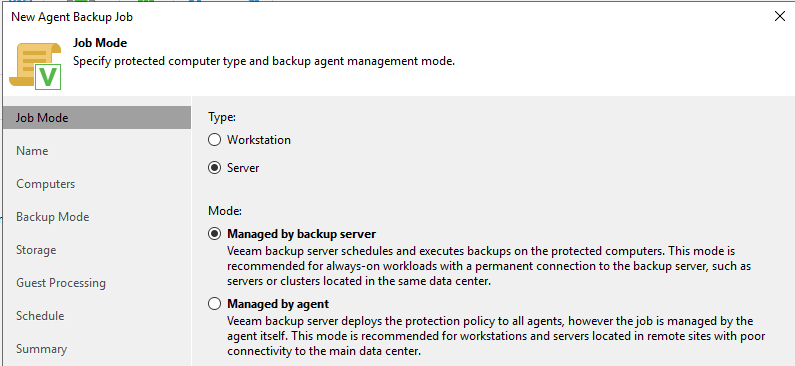
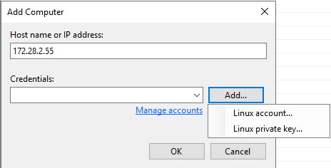
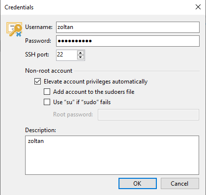
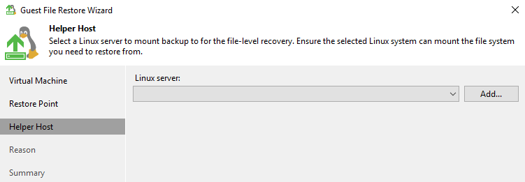

Serveur VEEAM Backup
Objectif et environnement
Objectif
Installation Veeam backup sur une VM Windows Serveur 2019
Environnement
Matériels :
Dell PowerEdge r240 avec Proxmox 7.1-7
Adressage des VMS :
Réseaux : 172.16.0.0/16
Serveur Windows 2019 : VEEAM 172.28.1.204/16
Serveur AD – Windows serveur 2019 : 172.28.1.200/16
Client Linux Debian 11 : DHCP
Client Windows Win 10 Pro : DHCP
Helper Host (pour la restauration) Ubuntu serveur 22.04 : 172.28.1.202/16
Documentation
Processus
Installation
J’ai téléchargé l’image sur le site officielle :
Choix Veeam Backup & Replication
J’ai cliqué sur OK pour l’installer le paquet manquant
J’ai choisi Install pour installer les prérequis manquants
Connexion au serveur
J’ai lancé l’application
Choix Apply
Ajout d’un dossier de sauvegarde
Backup Infrastructure / Backup Repositories / Add Repository

J’ai cliqué sur Browse pour sélectionner la nouvelle partition de partage
Choix partition F:\ précédemment préparé (Partition REFS/64ko).
En cliquant sur Populate, nous pouvons voir la capacité du disque et l’espace libre restant.
A la fin de configuration j’ai cliqué sur Apply
Choix Oui
Sauvegarder des VM
Création d’un Backup Job
Sauvegarder le Serveur AD
Ajouter ordinateurs pour sauvegarder
Laissé par défaut
Possibilité de programmer l’exécution du Job
Une fois le Job est lancé, nous pouvons suivre son évolution
Sauvegarder une VM Linux
Créer un nouveau job > Linux Computer
Choix Server > Managed by backup server

J’ai ajouté la VM en question
N’ayant pas déclaré dans le DNS, j’ai utilisé son adresse IP. Credentials (droits) > Add > Linux Account


J’ai choisi sauvegarder la VM en entier
J’ai choisi de garder les deux derniers points de restauration
J’ai laissé ses options désélectionné (par défaut)
J’ai choisi une sauvegarde mensuelle
Le récapitulatif du job et lancement de la sauvegarde
Lancement du job, début de la sauvegarde
Le serveur va lancer un scan et automatiquement installer automatiquement un client VEEAM sur la VM Debian si manquant (ici c’est le cas)
Une fois l’agent est installé nous avons une réponse succès
J’ai installé les paquets nécessaires pour linux (Debian)
sudo apt install dkms gcc make perl openssh-server
linux-headers-\$(uname -r) libudev-dev libacl1 libattr1 lvm2 libfuse-dev
libfuse2 libncurses5 dmidecode default-libmysqlclient-dev libpq5 python3
isolinux btrfs-progs squashfs-tools wget xorriso
Ensuite j’ai téléchargé et installé VEEAM
http://repository.veeam.com/.private/deb/veeam/
sudo dpkg -i veeam_5.0.2.4567_amd64.deb
Début de la sauvegarde
Fin de la sauvegarde
Sauvegarder une VM Windows
Création d’un nouveau job > Windows computer
Server > Managed by agent
Add > Individual computer
J’ai renseigné l’host et les droits d’accès
Nous avons la possibilité de renseigner directement l’utilisateur et son mot de passe ou passer par browse et chercher sur l’AD.
J’ai choisi browse
Puis avancé et renseigner l’accès à l’AD
Puis trouver l’utilisateur qu’on souhaite
Choix Volume level backup
Choix de objets avec Add > OS volume (je veux sauvegarder uniquement le volume contenant l’OS)
J’ai choisi Veeam backup repository (crée au début du TP)
Le nom DNS est automatiquement rempli
Choix de 2 points de restauration
Je ne choisis pas de créer une cache
J’ai laissé par défaut application-aware processing (traitement sensible aux applications)
J’ai choisi une sauvegarde par mois
Le récapitulatif
VEEAM lance son scan vers le client et installe l’agent si nécessaire
Début de la sauvegarde
Fin de la sauvegarde
Restaurer d’un fichier
Restaurer d’un fichier d’un VM Linux
Pour tester la restauration d’un fichier, j’ai créé un fichier test.odt puis j’ai effectué une sauvegarde. Par la suite j’ai supprimé le fichier pour pouvoir restaurer à partir de la sauvegarde.
Choix restore
Choix guest files restore
Choix de la machine virtuelle sur laquelle je veux restaurer le fichier supprimé.
Choix du point de restauration
Choix du linux serveur sur lequel on va « monter » notre VM debcli2
Linux server > Add

J’ai choisi comme helper host un Ubuntu serveur 22.04
Credentials > Add > Linux Account
Choix Oui
Les composants manquants seront automatiquement installés sur le Helper host

Récapitulatif
On peut renseigner une raison pour laquelle on effectue une restauration.
Choix Browse
La sauvegarde linux a été correctement monté, on peut rechercher le fichier supprimé
J’ai effectué un clic droit sur le fichier à restaurer :
Restauration en cours
Restauration effectuée
Je me suis reconnecté sur le client debcli01 pour vérifier si la restauration a bien été effectué.
Le fichier a été correctement restauré. Une fois la fenêtre fermée, le client est automatiquement démonté du serveur.

Restaurer d’un fichier d’un VM Windows
Je supprime un fichier du dossier téléchargement

Choix Restore
Choix Guest files restore
Choix Microsoft Windows
J’ai choisi la machine CLIWIN01
Récapitulatif. J’ai cliqué sur Browse.
J’ai recherché le fichier manquant
J’ai choisi le fichier à restaurer

Le fichier a été correctement restauré
J’ai vérifié sur la VM si le fichier a bien été récupéré. Le fichier a été correctement restauré.
Conclusion
VEEAM est un outil complet proposant une multitude de possibilité de sauvegarde. Il est très performant même dans sa version Community Edition. La restauration d’une VM entier actuellement n’est compatible qu’avec VMWare et HYPER-V mais pas des VM Proxmox.